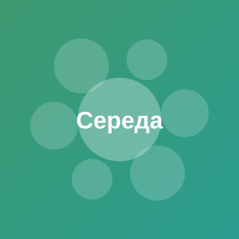
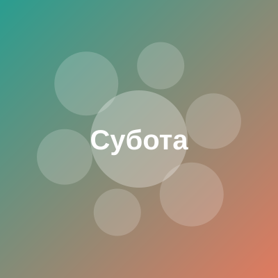

| № пари | Час | 1-й тиждень | 2-й тиждень |
|---|---|---|---|
| 1 | 8:20–9:40 | Основи програмування та алгоритмічне мислення Ватаманіца Е.В. 8-112 | |
| 2 | 9:50–11:10 | Дискретна математика (лекція) Яцько О.М. 9-3 | |
| № пари | Час | 1-й тиждень | 2-й тиждень |
|---|---|---|---|
| 1 | 8:20–9:40 | Математичні основи штучного інтелекту (група 3) Антонюк С.В. 8-117 | |
| 2 | 9:50–11:10 | Математичні основи штучного інтелекту (лекція) Малик І.В. 9-3 | |
| 3 | 11:30–12:50 | Дискретна математика Яцько О.М. 8-111 | |
| 4 | 13:00–14:20 | — | Актуальні питання історії та культури України Гуйванюк М.Р. 8-117 |
| № пари | Час | 1-й тиждень | 2-й тиждень |
|---|---|---|---|
| 1 | 8:20–9:40 | Архітектура комп`ютерних систем Ковальчук М.Л. 8-114 | |
| 2 | 9:50–11:10 | Архітектура комп`ютерних систем (лекція) Ковальчук М.Л. 8-117 | |
| 3 | 11:30–12:50 | Технології веброзробки Карачевцев А.О. 8-112 | |
| 4 | 13:00–14:20 | Іноземна мова (за професійним спрямуванням) (група 3) Кшевецький В.С. 8-120 | |

| № пари | Час | 1-й тиждень | 2-й тиждень |
|---|---|---|---|
| 1 | 8:20–9:40 | — | Актуальні питання історії та культури України (лекція) Юрій М.Ф. 9-2 |
| 2 | 9:50–11:10 | Дискретна математика (лекція) Яцько О.М. 9-1 | Математичні основи штучного інтелекту (група 3) Антонюк С.В. 8-212 |
| 3 | 11:30–12:50 | Технології веброзробки (лекція) Яцько О.М. 9-3 | |
| № пари | Час | 1-й тиждень | 2-й тиждень |
|---|---|---|---|
| 1 | 8:20–9:40 | Основи національного спротиву з 01.10.2026 військова кафедра | Основи програмування та алгоритмічне мислення (лекція) Довгунь А.Я. 8-224 |
| 2 | 9:50–11:10 | Основи національного спротиву з 01.10.2026 військова кафедра | Основи програмування та алгоритмічне мислення (лекція) Довгунь А.Я. 8-224 |
| 3 | 11:30–12:50 | Основи національного спротиву з 01.10.2026 військова кафедра | Основи програмування та алгоритмічне мислення Ватаманіца Е.В. 8-112 |
| 4 | 13:00–14:20 | Основи національного спротиву з 01.10.2026 військова кафедра | Дискретна математика Яцько О.М. 8-120 |
| Час | Заняття |
|---|---|
| 10:00–12:00 | Спорт, пробіжка або прогулянка |
| 12:30–14:00 | Обід, час із родиною |
| 15:00–17:00 | Хобі та особисті проєкти |
| 18:00–21:00 | Зустріч із друзями, кіно |

| Час | Заняття |
|---|---|
| 10:00–11:30 | Повільний ранок, сніданок |
| 12:00–14:00 | Прогулянка, відпочинок на свіжому повітрі |
| 15:00–17:00 | Підготовка до навчального тижня |
| 18:00–20:00 | Читання, серіали, відпочинок |